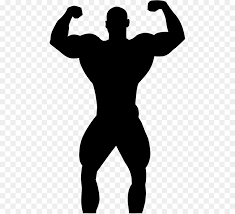
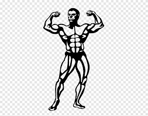
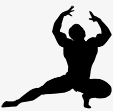

<!DOCTYPE html>
<html lang="es"></html>
<head>
    <meta charset=UTF-8>
    <tittle>Culturismo</tittle>   
    <!-- carga la hoja de estilos-->
    <link rel="stylessheet" href="assets/styles/styles/estilos.css"
 </head>
 <section>

    <header>
        <h1>Culturismo</h1>
    </header>

</section>


                                        
<!-- Culturismo-->    
<article>
<header>
    <hgroup>
   <!-- La Dragadicción-->
   <h2>Culturismo</h2>
   <!--8/11/2021-->
   <h4>8/11/2021</h4>
    </hgroup>
</header>
<div>
<h2>  Culturismo</h2>
<figure>

<figcaption>Inicios.</figcaption>
</figure>
</div>
</figure>
   <span style="color:red;">Inicios del Culturismo</span>
   El fisicoculturismo es la actividad física encaminada al máximo desarrollo muscular (de la musculatura visible) del ser humano. Desde este punto de vista, comparte con otros deportes ciertos métodos y destrezas, aunque su finalidad es notoriamente diferente. Esta actividad tiene sus primeras manifestaciones en figuras de vasos griegos; al parecer, ya se usaban pesos de manos (a modo de lastre) para realizar saltos o ejercicios con el fin de aumentar la fuerza y longitud del salto. Se trata de comportamientos dirigidos fundamentalmente al desarrollo de la fuerza o de su tamaño, con el objetivo de la supervivencia como clara finalidad, o bien como ritos religiosos en festividades concretas.

Sus primeras referencias históricas, por tanto, podrían llevarnos a la Grecia donde el cuerpo humano tuvo una relevancia cultural que se ha resucitado en nuestros días. El culturista o atleta muscularmente hipertrofiado podemos observarlo en múltiples representaciones escultóricas: Hércules, Laocoonte, frisos con guerreros, etc.

La palabra culturismo procede del francés. Se considera que fue en Francia en los siglos XVIII y XIX donde tuvo lugar el nacimiento de una disciplina deportiva que tenía como finalidad la estética, palabra que entronca directamente con la cultura física.
El fisicoculturismo es la actividad física encaminada al máximo desarrollo muscular (de la musculatura visible) del ser humano. Desde este punto de vista, comparte con otros deportes ciertos métodos y destrezas, aunque su finalidad es notoriamente diferente. Esta actividad tiene sus primeras manifestaciones en figuras de vasos griegos; al parecer, ya se usaban pesos de manos (a modo de lastre) para realizar saltos o ejercicios con el fin de aumentar la fuerza y longitud del salto. Se trata de comportamientos dirigidos fundamentalmente al desarrollo de la fuerza o de su tamaño, con el objetivo de la supervivencia como clara finalidad, o bien como ritos religiosos en festividades concretas.

<span style="color: blue;">Futuro para este deporte</span>"
<div>
    <!--El actual ganador absoluto de Classic Bodybuilding en el Arnold Classic Europe, se postula como uno de los referentes dentro del culturismo clásico. El tiempo nos lo dirá.-->

<footer>


</footer>   
</article>
<!--Culturismo-->
<article>
    <header>
        <hgroup>
            <!--Culturismo-->
            <h2>Culturismo</h2>
            <!--11/11/2021-->
            <h4>11/11/2021</h4>
        </hgroup>
    </header>
    <span class="fondo_rojo">¿Qué se necesita?</span>
    Lo primero que hay que tener claro es que el culturismo-fitness de competición aunque aparentemente es un deporte muy físico, el apartado que más debe cuidarse es el mental, ya que realmente cualquier persona que quiera competir, independientemente del físico que tenga (con más musculo o menos, con más años de entrenamiento o apenas ninguno) podrá hacerlo. Nadie le va a decir que no.

Si no se tiene una mentalidad muy centrada en cumplir este tipo de objetivo, nunca se podrá llegar a competir. No todo el mundo tiene la capacidad mental necesaria para dedicarse a un deporte que implica las 24h de tu vida, basado en un plan dietético cuadriculado, un sistema de entrenamiento constante, unos tiempos de descanso acordes a lo que necesita un físico para poder progresar de una forma idónea, y todo esto casi sin parones.

Todo esto es parte de un protocolo que formará parte de tu vida y que además deberás aprender a compaginarlo con el resto de tus obligaciones diarias: tu trabajo o estudios, atender a tu familia o a tus amigos… o hacer cualquier tipo de actividad paralela.
<iframe width="200" height="auto" src="https://www.youtube.com/watch?v=7PKaCNQ6QZw" title="YouTube video player" frameborder="0" allow="accelerometer; autoplay; clipboard-write; encrypted-media; gyroscope; picture-in-picture" allowfullscreen></iframe>     
<footer>

</footer>
</article>
</body>
</html>
